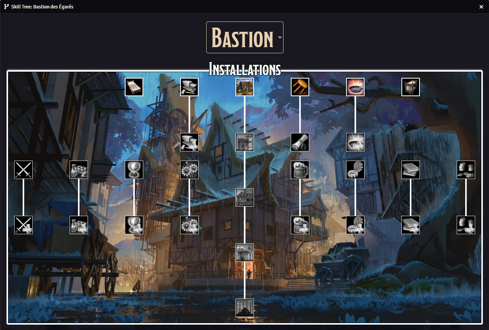
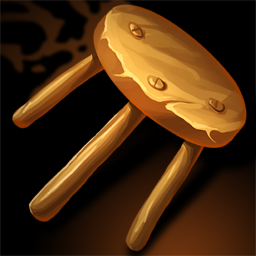

Présentation
Le système de Bastion est issu du Guide du Maître (2024), chapitre
8, page 334. Dans notre campagne, les cinq personnages partagent un
seul et même
Bastion, un lieu central qui évolue avec eux. Ce havre est d’abord
un espace de repos, de soin et de réconfort entre deux expéditions —
un foyer, un quartier général, un symbole de leur union.
Mais le Bastion ne se limite pas à la détente. Il joue un rôle
actif
dans l’aventure : vous pourrez recruter des membres pour votre
guilde, leur assigner des tâches variées (artisanat, recherche,
entraînement, missions dans le Labyrinthe…), améliorer vos
installations, et bien
plus encore. Ce système vous permet d’influencer le monde au-delà
du Labyrinthe, d’investir dans votre avenir et de bâtir votre propre
légende.
Le Bastion dispose également d’une jauge de Confort, influencée par
les meubles et installations que vous y placez. En franchissant
certains paliers de confort, vous débloquerez divers bénéfices
passifs : récupération améliorée, bonus sur les tâches accomplies
par vos recrues, et autres
privilèges qui rendent votre refuge toujours plus accueillant et
efficace.
Tours de Bastion
Le Bastion fonctionne selon un rythme quotidien, structuré en tours
de Bastion : chaque jour qui passe en jeu correspond à un tour.
Toutes les activités entreprises dans le Bastion — qu’il s’agisse de
missions confiées aux membres de la guilde, de construction
d’installations, d’études, d’artisanat ou de récupération — ont une
durée exprimée en nombre de tours. À chaque nouveau jour, un tour
s’écoule, permettant de faire progresser toutes les tâches en cours.
Ce système offre une gestion souple mais immersive du temps, et
renforce le sentiment que votre Bastion vit, s’anime, et évolue en
parallèle de vos aventures.
Installations
Le Bastion peut accueillir diverses installations, véritables
centres d’activité où vos recrues de guilde peuvent être affectées
pour accomplir des tâches spécifiques : production d’objets,
entraînement, recherche, collecte, etc. Ces installations
constituent l’ossature fonctionnelle de votre domaine, et permettent
de faire vivre la guilde même en dehors des expéditions.
Le menu des installations est présenté sous la forme d’un arbre de
compétences, facilitant la lecture des prérequis et des évolutions
possibles.

Chaque installation nécessite de remplir trois conditions
pour être construite :
Atteindre un certain niveau,
Dépenser une somme d’entals,
Disposer d’assez de place dans le Bastion pour
l’accueillir.
Une fois en place, une installation peut être agrandie, ce qui
augmente ses effets, débloque de nouvelles options ou permet d’y
affecter davantage de recrues. Il est aussi possible d’agrandir le
Bastion lui-même, afin d’y construire plus d’installations
et développer votre guilde selon vos priorités stratégiques.
Liste des installations
Atelier
Permet à vos recrues de fabriquer des munitions à partir de recettes
connues. Offre une source d’Inspiration après un repos court. Peut
être agrandi pour accueillir plus d’employés et accélérer la
production.
Bar de guilde
Lieu convivial où vos recrues partagent rumeurs et informations.
Permet de localiser des cibles dans le Labyrinthe et propose une
boisson magique différente chaque jour, aux effets utiles et variés.
Son agrandissement améliore le confort et débloque une seconde
boisson active.
Bibliothèque
Permet de mener des recherches approfondies sur un sujet précis :
lieux, créatures, objets, légendes... Après quelques jours, vous
recevez jusqu’à trois informations inédites. Son agrandissement
réduit le temps de recherche en ajoutant des employés.
Chambre
Espace privé et personnel réservé à chaque membre original de la
guilde, la
chambre n’a pas d’effet mécanique direct, mais constitue un lieu de
repos et d’intimité essentiel pour les personnages.
Cuisine
Permet à vos recrues de préparer des plats issus des recettes
connues de la guilde, avec effets variés selon les mets.
L’agrandissement ajoute du confort et accélère la préparation grâce
à une équipe élargie.
Dortoir
Permet d’héberger les recrues de la guilde. Indispensable pour
recruter de nouveaux membres, chaque lit disponible dans le dortoir
représente une place d’accueil active pour la guilde.
Forge
Permet à vos recrues de fabriquer armes, armures et équipements à
partir des plans maîtrisés par la guilde. L’agrandissement augmente
le nombre d’employés pour accélérer la production.
Hall de guilde
Permet de recruter de nouveaux membres pour votre Bastion ou
d’organiser des missions de guilde pour éliminer des ennemis connus
et récupérer leur butin. Sert aussi de lieu de réunion et de détente
pour vos recrues.
Jardin
Permet de récolter des ressources naturelles selon le type de jardin
choisi (fleurs, rations, herbes médicinales, poisons…). Vous pouvez
changer son type avec du temps, et l’agrandir pour doubler les
récoltes.
Laboratoire d’alchimie
Permet à vos recrues de fabriquer des objets alchimiques à partir
des recettes connues. Son agrandissement ajoute des employés pour
accélérer la production et améliorer l’efficacité du laboratoire.
Salle d'entraînement
Permet à vos personnages de suivre un programme d’entraînement
intensif et de bénéficier de bonus temporaires selon le type
d'entraîneur choisi (combat, magie, compétences). Peut être agrandie
pour offrir plusieurs entraînements simultanés.
Salle de jeux
Offre à votre guilde un lieu de divertissement et de paris
organisés, rapportant des gains aléatoires chaque semaine. Son
agrandissement augmente les revenus et renforce le confort du
Bastion.
 Salle des trophées
Salle des trophées
Exposition de souvenirs glorieux et trophées de vos victoires, cette
pièce augmente considérablement le confort du Bastion. Peut être
agrandie pour accueillir plus de trophées et renforcer le prestige
du lieu.

Salon
Pièce centrale du Bastion, le Salon sert de lieu de repas, de repos
et de réunion pour les membres de la guilde. Indispensable pour
créer une ambiance conviviale, il est requis pour certaines autres
installations, comme le hall de guilde.